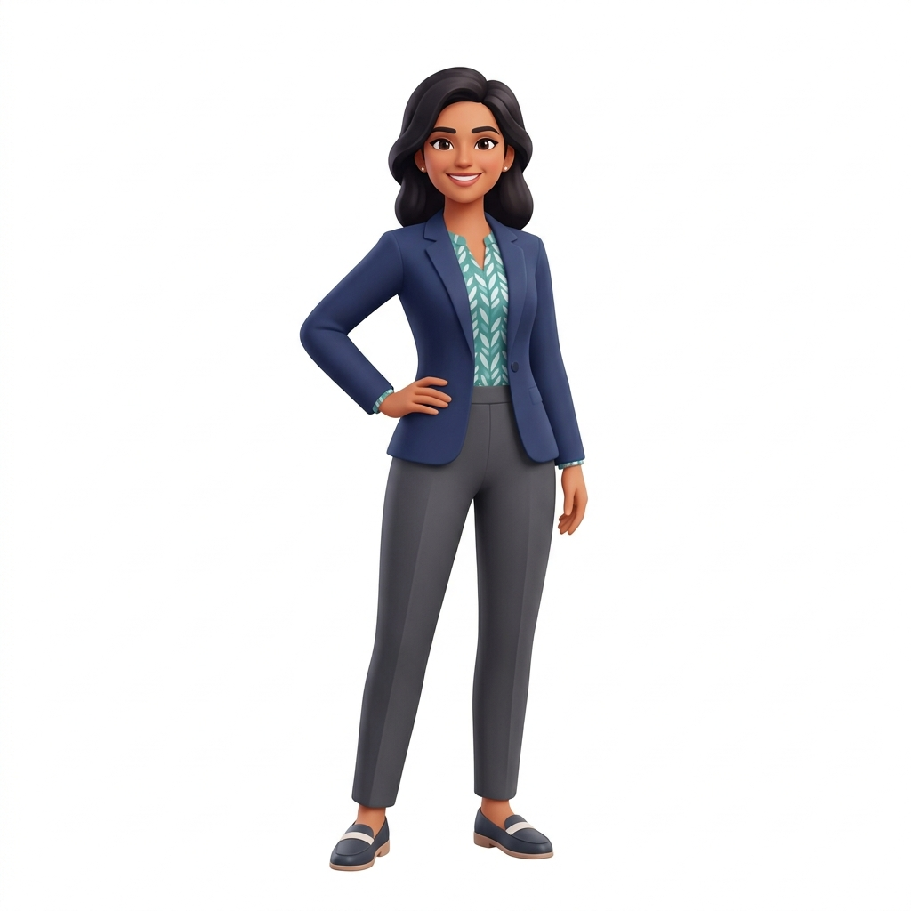

Application Storyboard
From the moment a user opens NutriGuard to the moment they get personalized nutrition guidance — told in 8 panels.
Priya is overwhelmed. Her doctor said "watch your diet", but generic advice leaves her guessing.
The user before NutriGuard exists in her life
Too many sources. No personalized guidance.
Trying her best, she takes her iron pill with tea. She has no idea the tannins are blocking absorption.
Everyday food combinations silently block Priya's iron absorption — and no app tells her
Tannins in tea bind to iron, reducing absorption by up to 60–70%
8:30 AM — same breakfast window
Calcium in dairy competes with iron for absorption within a 2-hour window
1:00 PM — dahi rice for lunch
She signs up for NutriGuard and describes her health in her own words.
Priya describes her health in her own words — NutriGuard's AI does the rest
Natural language → normalized clinical profile.
No medical codes needed.
Priya simply texts what she ate. No complex forms, no calorie counting.
Plain text, no barcode scanning — just type what you ate
Finally, clear guidance. Priya knows exactly what to change without feeling restricted.

No jargon, no panic — just clear actions Priya can take today
Moving users from confusion to clarity without behavioral friction
Generic advice
Blocking nutrients
Text logging
Data processing
Clear guidance
THE CORE MESSAGE
NutriGuard AI turns every meal into a personalized nutrition checkpoint — catching harmful food interactions before they become health problems.
🛡️
Thank you — now go tell your app's story.
Over 500M people in India have micronutrient deficiencies (iron, B12, D). Users track calories, but miss invisible risks (e.g., drinking tea with iron supplements blocks absorption).
Generic chatbots hallucinate. Traditional apps require tedious gram-tracking.
Asynchronous processing via Azure Service Bus.
LangGraph orchestrates 3 specialized LLM agents.
Strict guardrails block medical diagnosis or dosage advice.
Meals are written to DB + outbox table atomically. Background publisher polls every 5s — reliable event delivery without distributed transactions.
3-tier LLM fallback ensures the system never completely fails. Even without any API keys, rule-based analysis provides useful guidance.
Full day's meal timeline sent to AI — enables cross-meal risk detection like tea 90 min after iron across different meals.
Free-text health conditions / supplements / deficiencies are normalized to canonical terms via alias dictionaries for consistent AI analysis.
All observability stored in MetricEvent table with JSON payloads — no external monitoring dependency. Admin dashboard queries directly.
No medical diagnoses, no dosage changes, Ayurveda labeled as traditional guidance. Safety guardrails checked in evaluation with manual scoring rubric.
We used AWS Kiro (agentic IDE) to design and plan the rate limiter upfront, prioritizing a strict planning phase.
Forcing a planning phase ensures the token-bucket architecture matches our exact intent.
Deep property-based testing caught concurrent database race conditions before deployment.
A 3-stage linear DAG processes each meal through specialized AI agents.
Extracts foods, ingredients, portion sizes, and nutritional properties from unstructured text logs.
Compares meals against user's health profile (deficiencies, supplements) to flag risks or absorption inhibitors.
Synthesizes daily insights into empathetic reports, suggesting adjustments and health-safe alternatives.
From meal log to safety-aware guidance in seconds.
Plain language input.
Nutrition + risk analysis.
Clear, safety-aware report.
Every push to main triggers automated linting, PyTest runs, and Docker container builds.
React frontend on Azure Static Web Apps. Backend on Azure Container Apps (ACA).
13 tests passing in 0.51s
Configurable concurrent read tests
Full E2E workflow simulation
Local retrieval-only eval (no API key needed) + full RAGAS framework with OpenAI judge. Targets: Recall@K ≥80%, Precision@K ≥60%, Faithfulness ≥90%, Safety 100%.
No medical diagnoses, no dosage changes, safety notes always included, no invented values. Manual scoring rubric: 1-5 scale, pass = avg ≥4.0, no safety case below 5.
Every request stamped with correlation_id = meal_log_id.
| AGENT | RUNS | AVG | P95 | MAX |
|---|---|---|---|---|
| meal analyzer | 6 | 43,271ms | 161,164ms | 161,164ms |
| health risk | 6 | 37,087ms | 83,409ms | 83,409ms |
| report | 6 | 26,198ms | 55,446ms | 55,446ms |
Endpoint: /users/1/profile
| PROVIDER | CALLS | INPUT | OUTPUT | TOTAL | COST |
|---|---|---|---|---|---|
| gemini | 3 | 3,436 | 611 | 9,406 | $0.00 |
| AGENT | CALLS | INPUT | OUTPUT | TOTAL | COST |
|---|---|---|---|---|---|
| meal analyzer | 1 | 120 | 69 | 508 | $0.00 |
| health risk | 1 | 1,560 | 198 | 3,614 | $0.00 |
| report | 1 | 1,756 | 344 | 5,284 | $0.00 |
POST /meals (Async AI Orchestrator)
12.4s
GET /dashboard (Fast Read)
150ms
Fix: 3-tier provider chain fallback (Gemini → OpenAI → rules). Multi-key rotation for quota management. All fallbacks tracked via MetricEvents.
Fix: Added AutoLockRenewer with configurable lock renewal (300s default). Prevents message reprocessing on slow LLM calls.
Fix: Both backend and orchestrator require the same INTERNAL_API_KEY. Added to deployment checklist and env validation.
Fix: Dynamic CORS_ORIGINS config. Custom middleware handles edge cases. Different origins for local/ngrok/production.
10-step production debugging runbook covering frontend URL, backend health, Service Bus queue, container status, trace IDs, and dashboard checks.
Questions, feedback, and next steps for NutriGuard AI.